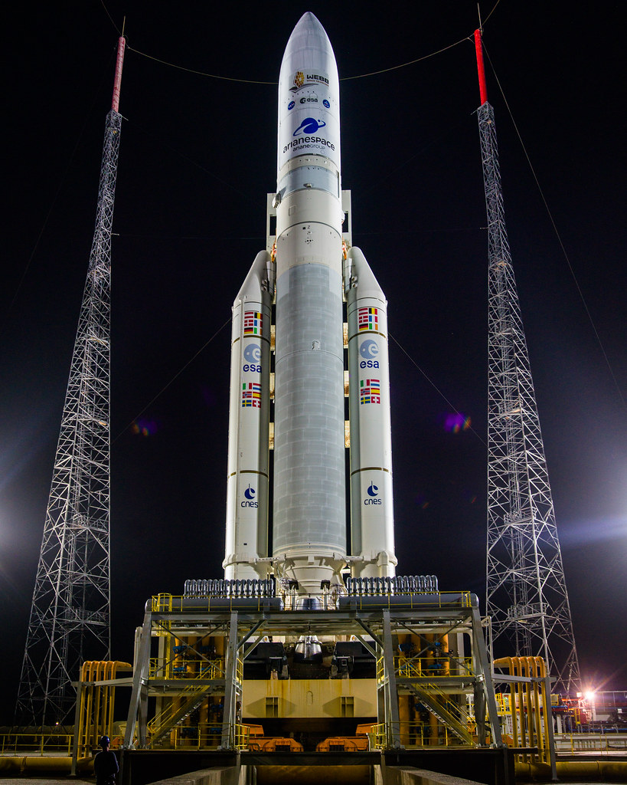
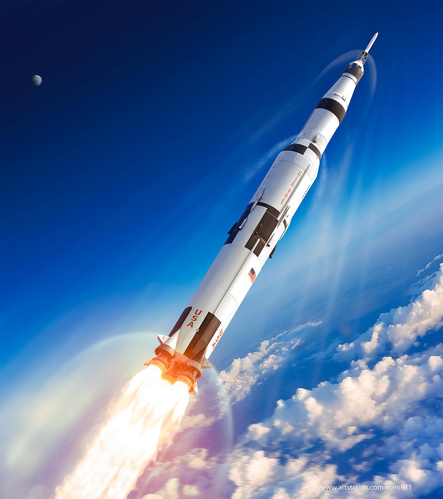
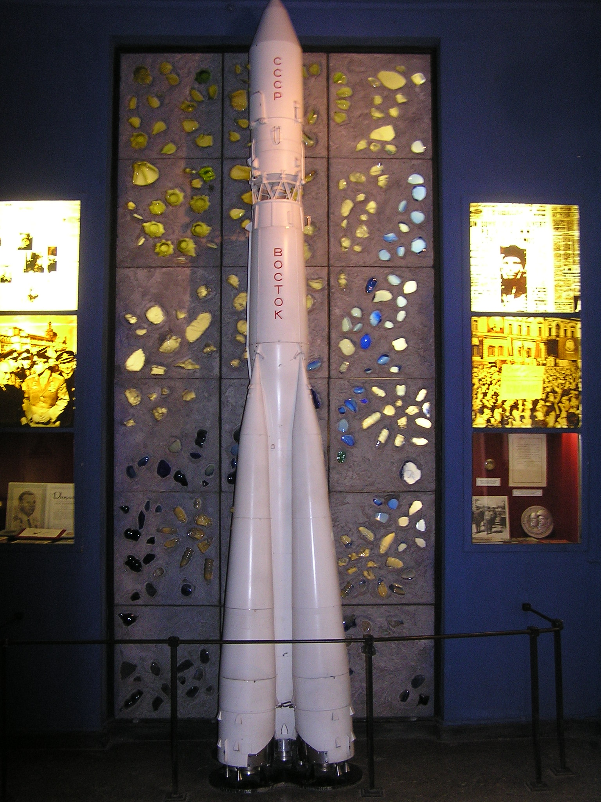
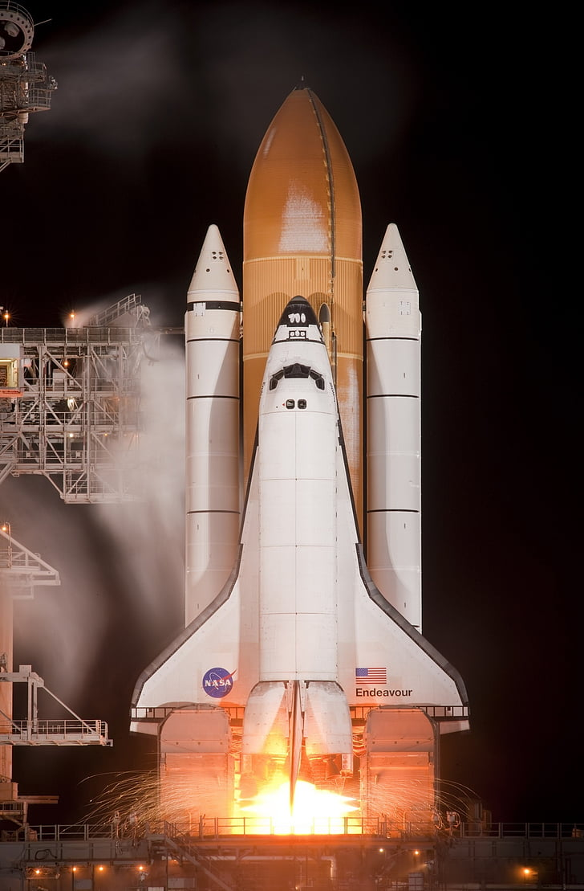

Quand on parle d'espace, on pense de suite à la galaxie ou au système solaire mais aussi au fusée.
Plusieurs fusée différentes ont foulé le sol de notre terre, quels soyent Américaine, Russe ou Européennes, toute fusée ont puissante.
Le tableau ci-dessous vous en montre certaines.
| Nom | Pays constructeur | Agence relié | Utilité | Histoire | image |
|---|---|---|---|---|---|
| Ariane 5 | Espagne, France, Belgique, Suède et Allemagne | ESA (Agence Spatiale Européennes ou Europeans Space Agence en anglais) | Envoyé des sattelites dans l'espace | C'est la fusée la plus servie dans l'ESA et elle a servi a mettre en orbite le célèbre téléscope de la NASA, James Webb |  |
| Saturne V | États-unis | NASA | nvoyé des astronautes dans l'esapce | C'est sans doute la fusée la plus célèbre de la NASA car c'est elle qui amenait les astronautes des missions APOLLO sur la lune |  |
| R-7 Semiorka | URSS | URSS | Missile intercontinental et fusée spatiale | C'est la fusée qui à mis en orbite les satellites Spoutniks de 1957 à 1968 |  |
| Challenger | États-unis | NASA | Envoyé des astronautes dans l'espace | Une fusée tristement célèbre pour avoir exploser au décollage |  |
| Starship | États-unis | Space X | Envoyé des astronautes, Spacionautes et Cosmonaute sur d'autre planète | Une fusée que Space X a crée pour pouvoir aller sur Mars | |